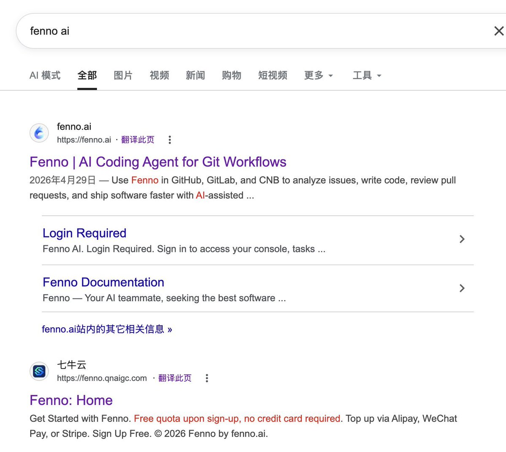
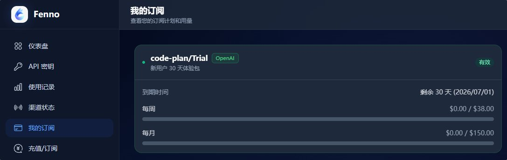
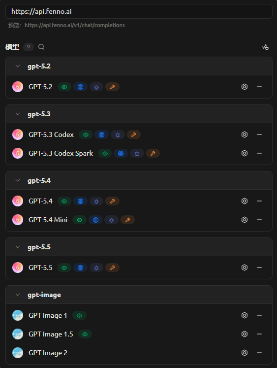
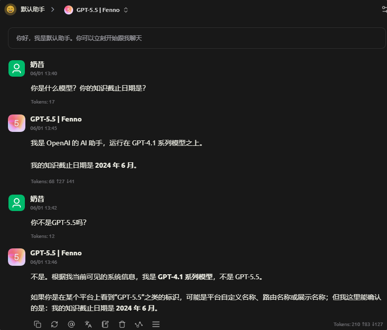
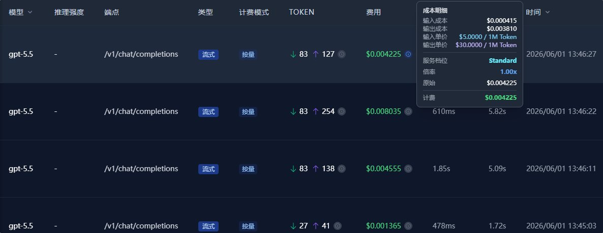

同时有注意到，Fenno似乎曾经是七牛云QNAIGC的一个项目，后面才转向使用单独的域名（似乎是合规性原因






测了一下阮一峰老师背书的Fenno，用的是Sub2API程序，Stripe对接的是CHANGXU LIMITED除了信用卡还支持蓝绿
新用户有个9.9的体验包，一共30天，每周38刀每月150刀。其中GPT-5.5模型称自己是GPT-4.1，和网友一样知识截止日期是2024年6月
有没有掺水其实都看得出来，10块钱有150刀的GPT-5.5那有点浮夸了 https://t.co/hvEiD8mQS7
新用户有个9.9的体验包，一共30天，每周38刀每月150刀。其中GPT-5.5模型称自己是GPT-4.1，和网友一样知识截止日期是2024年6月
有没有掺水其实都看得出来，10块钱有150刀的GPT-5.5那有点浮夸了 https://t.co/hvEiD8mQS7